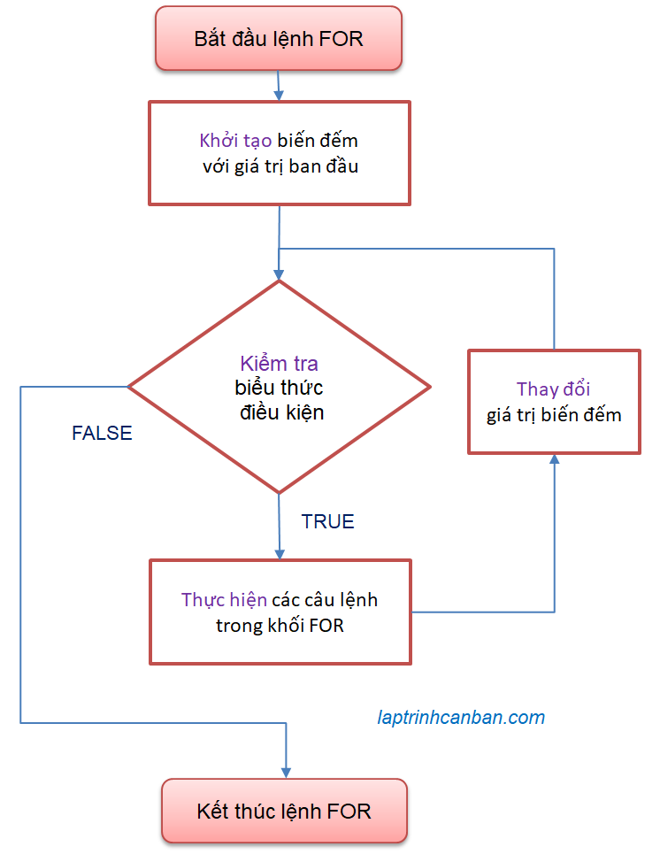

Hướng dẫn cách sử dụng vòng lặp for trong C. Bạn sẽ học được khái niệm vòng lặp for trong C là gì, cách dùng lệnh for trong vòng lặp với số lần cụ thể, cách thoát khỏi vòng lặp for cũng như cách bỏ qua lượt lặp for hiện tại trong C sau bài học này.
For trong C
For trong C là vòng lặp giúp lặp lại các xử lý trong chương trình với một số lần cụ thể. Khác với các ngôn ngữ như Python vốn sử dụng vòng lặp for để lặp số lần đúng bằng số phần tử có trong đối tượng đã chỉ định, thì for trong C lại dùng tới một biến đếm để quyết định số lần lặp trong vòng lặp. Và bằng cách sử dụng các biểu thức xử lý biến đếm trong hàm for, chúng ta sẽ tự do hơn khi chỉ định số lần lặp trong C so với các ngôn ngữ khác.
Chúng ta sử dụng vòng lặp for trong C với cú pháp như sau:
for (biểu thức khởi tạo ; biểu thức điều kiện ; biểu thức thay đổi ) {
Câu lệnh 1 trong khối for ;
Câu lệnh 2 trong khối for ;
…
}
Trong đó:
Biểu thức khởi tạo là biểu thức đầu tiên được thực thi khi câu lệnh for được thực thi. Nó chủ yếu được sử dụng để khởi tạo các biến đếm được sử dụng trong biểu thức điều kiện.
Biểu thức điều kiện là biểu thức sử dụng để quyết định có thực thi các câu lệnh được miêu tả bên trong khối for hay không. Nếu biểu thức điều kiện được đánh giá là true (đúng), thì các câu lệnh được mô tả bên trong khối for được nằm giữa cặp dấu
{}sẽ được thực thi theo thứ tự từ trên xuống. Và nếu false (sai), quá trình lặp được kết thúc.Biểu thức thay đổi là biểu thức biến đối giá trị của biến đếm. Sau mỗi lần vòng lặp được thực thi, biến đếm sẽ được thay đổi thông qua Biểu thức thay đổi dẫn đến kết quả Biểu thức điều kiện cũng sẽ thay đổi. Và Biểu thức điều kiện sẽ được đánh giá lại, để quyết định sẽ tiếp tục hay kết thúc vòng lặp.
Để hiểu rõ hơn, chúng ta cùng xem một ví dụ cụ thể về một vòng lặp for in ra màn hình 2 lần dòng hello như sau:
|
Chúng ta có các thành phần của for và ý nghĩa như sau:
- Biểu Thức Khởi Tạo
int i = 1có tác dụng tạo một biến i để đếm vòng lặp. Trong ví dụ này chúng ta chỉ định giá trị ban đầu của biến i bằng 1. - Biểu Thức Điều Kiện
i < 3có tác dụng chỉ định điều kiện để thực hiện vòng lặp. Nếu biểu thức điều kiện TRUE (đúng) thì vòng lặp được chạy và nếu FALSE (sai) thì kết thúc vòng lặp. - Biểu Thức Thay Đổi
i++có tác dụng thay đổi biến i sau mỗi lần lặp được thực hiện. Ở đâyi++có nghĩa là tăng 1 đơn vị vào biến i. Chúng ta cũng có thể chỉ địnhi--khi muốn giảm 1 đơn vị từ biến i.
Vậy vòng lặp ở trên sẽ chạy như thế nào? Hãy xem kỹ ở phần miêu tả các xử lý sau đây:
Lượt lặp đầu tiên:
- Khai báo biến i và gán giá trị ban đầu
i = 1 - Biểu thức điều kiện
i < 3là TRUE nên thực thi vòng lặp - Chạy lệnh
printf("hello %d\n", i);trong khối lệnh - Biểu thức thay đổi tăng giá trị i lên 1 đơn vị thành
i=2
Lượt lặp thứ 2:
- Biểu thức điều kiện
i < 3là TRUE nên thực thi vòng lặp - Chạy lệnh
printf("hello %d\n", i);trong khối lệnh - Biểu thức thay đổi tăng giá trị i lên 1 đơn vị thành
i=3
Lượt lặp thứ 3:
- Biểu thức điều kiện
i < 3là FALSE nên thoát khỏi vòng lặp
Ngoài vòng lặp:
- Chạy lệnh tiếp theo
printf("bye")sau khi thoát vòng lặp.
Kết quả, vòng lặp for ở trên sẽ in ra màn hình console như sau:
hello 1 |
Chúng ta có thể khái quát xử lý bằng Sơ đồ khối của vòng lặp for trong C như sau:

Vòng lặp for rút gọn trong C
Trong một vài trường hợp đặc biệt, chúng ta có thể lược bỏ các thành phần không dùng đến và rút gọn vòng lặp for trong C.
Lược bỏ cặp dấu ngoặc nhọn
Nếu chỉ có một câu lệnh duy nhất trong khối lệnh của for, chúng ta có thể lược bỏ cặp dấu {} và rút gọn vòng lặp for trong C như sau:
for (int i = 1; i < 3; i++) |
Chúng ta cũng có thể viết các lệnh trên cùng một dòng như sau:
for (int i = 1; i < 3; i++) printf("hello %d\n" , i); |
Lược bỏ biểu thức khởi tạo
Nếu chúng ta đã khởi tạo biến đếm ở ngoài vòng lặp for thì biểu thức khởi tạo có thể được rút gọn. Ví dụ như sau:
int i = 0; |
Với vòng lặp for trên, do biến i đã được khởi tạo trước for, nên chúng ta có thể rút gọn việc khởi tạo biến đếm này, và kết quả chương trình sẽ như sau:
i=0 |
Lưu ý là mặc dù rút gọn biểu thức khởi tạo, nhưng dấu ; vẫn cần được viết nhé.
Lược bỏ biểu thức điều kiện
Trong trường hợp không cần thiết phải kiểm tra điều kiện để kết thúc vòng lặp, chúng ta có thể lược bỏ biểu thức điều kiện, và tạo ra một vòng lặp vô hạn trong C.
Lưu ý trong trường hợp này, để có thể thoát vòng lặp vô hạn, chúng ta cần phải ghi thêm một lệnh break bên trong xử lý của vòng lặp. Ví dụ cụ thể:
int sum = 0; |
Với vòng lặp này, mặc dù không tồn tại biểu thức điều kiện, nhưng với câu lệnh break được thực thi khi giá trị tổng sum lớn hơn 5, chúng ta vẫn có thể kết thúc vòng lặp tại vị trí mong muốn.
Lược bỏ biểu thức thay đổi
Chúng ta có thể lược bỏ biểu thức thay đổi và viết xử lý thay đổi biến đếm bằng câu lệnh trong khối. Ví dụ:
int i = 1; |
Trong vòng lặp này, mặc dù biểu thức thay đổi được rút gọn, nhưng nhờ câu lệnh i *= 3 nên giá trị của biến đếm vẫn được thay đổi sau mỗi lần thực thi vòng lặp. Và kết quả:
i= 1 |
Biến đếm của vòng lặp for trong C
Vòng lặp for trong C sử dụng bộ đếm để quyết định số vòng lặp sẽ được thực hiện.
Để đếm số lần lặp trong for, chúng ta sử dụng biến đếm ở trong biểu thức khởi tạo, biểu thức điều kiện và biểu thức thay đổi. Biến đếm này có một phạm vi sử dụng riêng, và chúng ta có nhiều cách để thay đổi biến đếm trong vòng lặp for.
Phạm vi sử dụng của biến đếm trong vòng lặp for C
Trong Biểu thức khởi tạo của câu lệnh for, chúng ta có thể khai báo biến cũng như gán giá trị cho biến đếm, nhưng phạm vi có thể sử dụng của biến được khai báo trong Biểu thức khởi tạo chỉ nằm trong khối của câu lệnh for mà thôi.
Ví dụ trong vòng lặp for sau đây, do chúng ta đã cố sử dụng giá trị của biến đếm i ở bên ngoài vòng lặp for, nên lỗi biên dịch đã xảy ra:
for (int i = 0; i < 2; i++){ |
Trong trường hợp bạn muốn sử dụng giá trị biến đếm ở cả bên trong lẫn bên ngoài vòng lặp, thì thay vì khai báo biến đếm trong Biểu thức khởi tạo thì hãy khai báo nó ở bên ngoài vòng lặp. Ví dụ:
int i; |
Vòng lặp for với biến đếm tăng dần 1 đơn vị | toán tử ++
Bằng cách sử dụng toán tử ++, chúng ta có thể tăng dần biến đếm 1 đơn vị khi thực hiện vòng lặp for như sau:
for (int i = 1; i < 5; i++){ |
Vòng lặp for với biến đếm giảm dần 1 đơn vị | toán tử –
Bằng cách sử dụng toán tử --, chúng ta có thể giảm dần biến đếm 1 đơn vị khi thực hiện vòng lặp for như sau:
for (int i = 5; i > 0; i--){ |
Vòng lặp for với biến đếm tăng giảm tùy ý
Bằng cách sử dụng các toán tử gán như +=, -=, *= trong biểu thức thay đổi, chúng ta có thể tăng giảm tùy ý biến đếm khi thực hiện vòng lặp for như sau.
Ví dụ chúng ta tăng dần biến đếm 2 đơn vị như sau:
for (int i = 1; i < 5; i+=2){ |
Hoặc chúng ta tăng dần biến đếm 3 lần như sau:
for (int i = 1; i < 30; i*=3){ |
Vòng lặp for trong C với nhiều biến đếm
Thông thường chúng ta chỉ sử dụng một biến đếm trong một hàm for trong C, tuy nhiên bằng cách đặt các biến đếm cách nhau bởi dấu phẩy , thì chúng ta vẫn có thể sử dụng vòng lặp for với nhiều biến đếm và thay đổi đồng thời các giá trị của chúng với cú pháp như sau:
for ( init1 ; init2 ; condition ; increment1 ; increment2 ) {
Câu lệnh 1 trong khối for ;
Câu lệnh 2 trong khối for ;
…
}
Trong đó init và increment là các biểu thức khởi tạo và biểu thức thay đổi tương ứng với các biến đếm, và condition là biểu thức điều kiện. Lưu ý là chúng ta có số init và increment tương ứng với số biến đếm, nhưng chỉ có một condition chung cho các biến đếm mà thôi.
Ví dụ cụ thể, chúng ta thay đổi cùng lúc giá trị của 2 biến đếm và thực hiện vòng lặp for trong C như sau:
|
Lại nữa, vòng lặp for với nhiều biến đếm trong C sẽ thay đổi đồng thời các giá trị của biến đếm và thực thi các lệnh trong vòng lặp. Trong trường hợp bạn muốn lần lượt thay đổi giá trị biến đếm và thực thi vòng lặp thì hãy sử dụng for lồng trong C để thay thế.
For lồng trong C (for trong for)
Trong khối lệnh for được xác định bởi cặp dấu {}, thông thường chúng ta sẽ viết các lệnh xử lý của vòng lặp.
Ngoài viết các lệnh ra, chúng ta cũng có thể viết một vòng for khác ở bên trong vòng for đó, để tạo ra for lồng trong C (for trong for).
Ví dụ, chúng ta có một for lồng trong C như sau:
for (int i = 1; i < 4; i++){ |
Tại vòng for lồng này, cứ mỗi khi vòng for ngoài (biến i) chạy 1 lần thì vòng for trong (biến j) sẽ được chạy 3 lần. Và vòng for ngoài được chạy 3 lần nên tổng lại sẽ có 3x3 bằng 9 vòng for sẽ được thực thi như sau:
i = 1, j = 1 |
Khác với vòng lặp for trong Java với nhiều biến đếm mà Kiyoshi đã giải thích ở trên, thì trong for lồng, các biến đếm không được thay đổi cùng lúc, mà sẽ thay đổi theo cặp kết hợp giữa các vòng trong và vòng ngoài.
Bỏ qua lượt lặp hiện tại của vòng lặp for trong C | Lệnh continue
Chúng ta sử dụng lệnh continue để bỏ qua lượt lặp hiện tại của vòng lặp for trong C và thực hiện các lượt lặp kế tiếp. Lệnh for sẽ bỏ qua lượt lặp for hiện tại khi lệnh continue được thực hiện, tất cả các xử lý sau lệnh continue đều bị bỏ qua và chương trình bắt đầu một lượt lặp mới.
Ví dụ, chúng ta bỏ qua lượt lặp trong chương trình in ra màn hình các phần tử trong mảng tại vòng lặp lần thứ 3 như sau:
|
Ở ví dụ này, khi đến vòng lặp thứ 3 thì giá trị i ==3 thỏa mãn biểu thức điều kiện i == 3, do đó lệnh continue trong khối lệnh if được thực hiện khiến lệnh for dừng các lệnh còn lại của lượt lặp hiện tại và bắt đầu một lượt lặp mới. Kết quả vòng lặp thứ 3 bị bỏ qua và không được in ra màn hình như trên.
Thoát khỏi vòng lặp for trong C | Lệnh break
Chúng ta sử dụng lệnh break để thoát khỏi vòng lặp for trong C theo điều kiện mà bạn muốn. Lệnh for sẽ dừng lại khi lệnh break được thực hiện, tất cả các xử lý sau lệnh break cũng như các lượt lặp còn lại trong lệnh for đều bị dừng giữa chừng.
Ví dụ, chúng ta dừng chương trình in ra màn hình các phần tử trong mảng tại vòng lặp thứ 3 như sau:
|
Ở ví dụ này, khi đến vòng lặp thứ 3 thì giá trị i ==3 thỏa mãn biểu thức điều kiện i == 3, do đó lệnh break trong khối lệnh if được thực hiện khiến lệnh for bị dừng và chương trình thoát khỏi vòng lặp tại vị trí này. Kết quả các vòng lặp tiếp theo sau vòng 3 không được thực thi như ở trên.
Tổng kết
Trên đây Kiyoshi đã hướng dẫn bạn về cách sử dụng vòng lặp for trong C rồi. Để nắm rõ nội dung bài học hơn, bạn hãy thực hành viết lại các ví dụ của ngày hôm nay nhé.
Và hãy cùng tìm hiểu những kiến thức sâu hơn về C trong các bài học tiếp theo.
HOME>> lập trình c cơ bản dành cho người mới học lập trình>>09. vòng lặp trong c